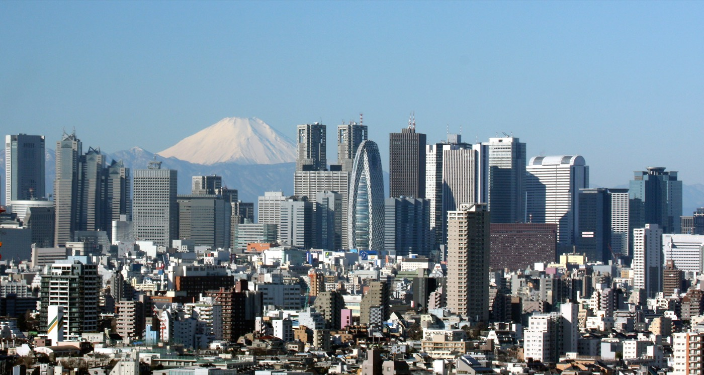
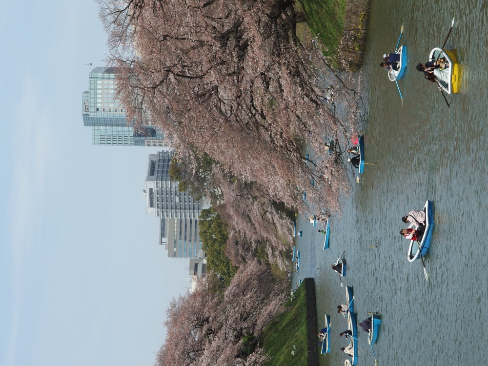
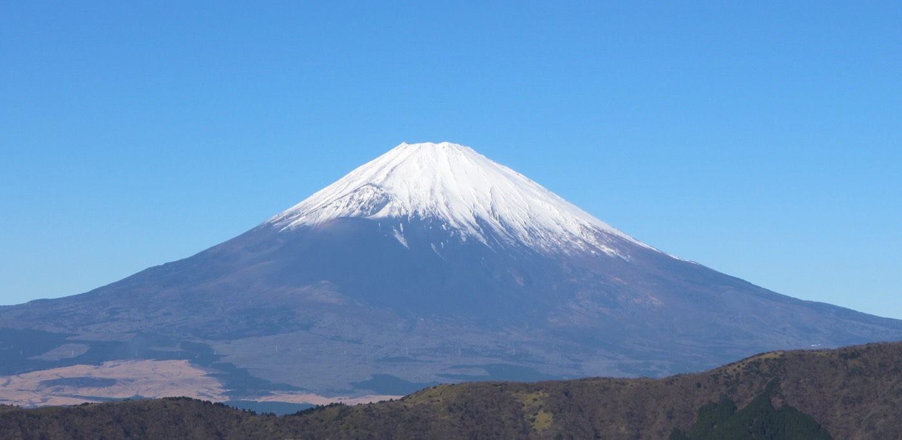
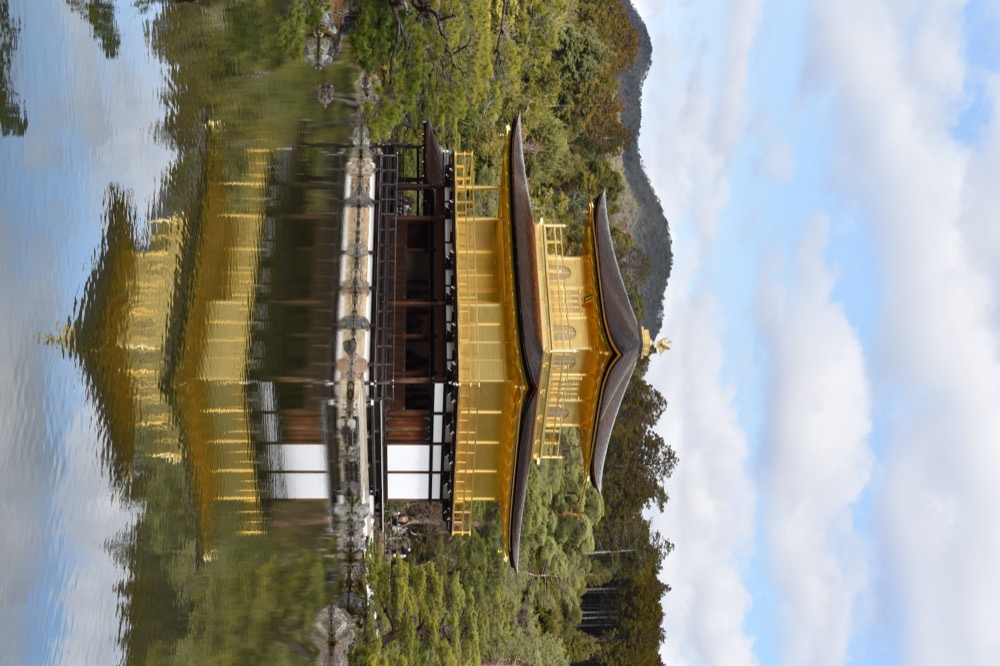
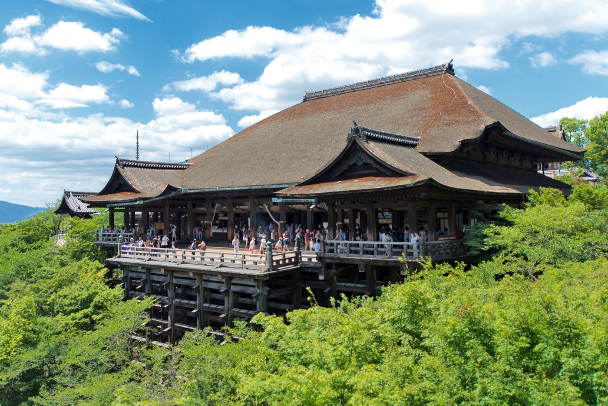
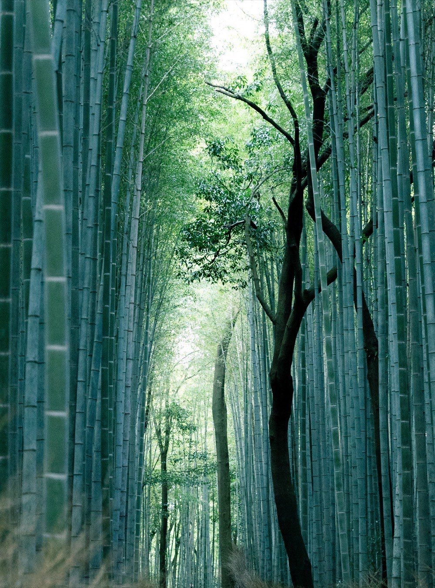

If you've been waiting for a sign to finally book Japan — this is it. For the last couple of years the Japanese yen has been historically weak against the US dollar, which means your money simply goes further: better hotels, incredible food, and world-class rail travel all for less than you'd expect. Spending it there also puts money straight into local shops, restaurants, and family-run inns. It's a rare moment where doing the trip of a lifetime and traveling responsibly point in the same direction.
Amber and I went right before cherry blossom season, and it instantly became one of our favorite countries on earth. This guide is part story and part playbook — the exact route we took from Tokyo to Kyoto, plus the practical things I wish someone had told us first: when to go, how the trains actually work, what the JR Pass is really worth, how to not accidentally be rude, and where to eat beyond the ramen. Let's get into it.
When to Go (and the Truth About the Yen)
Japan is a genuinely four-season country, and the season you pick changes the whole trip:
- Cherry blossoms (late March–early April): the postcard version of Japan, and the busiest, priciest window. Peak bloom shifts a week or two each year with the weather, and forecasts only firm up in late winter — so if sakura is the goal, book flights and hotels 6–12 months out and stay flexible.
- Autumn foliage (November): arguably the equal of spring, with fiery maples around Kyoto's temples and thinner crowds than sakura season.
- Summer (June–August): hot, humid, and June brings the rainy season. Cheaper and quieter, but pack accordingly.
- Winter (December–February): crisp, clear, and underrated — great city weather, fewer tourists, and easy access to snow up north. (This is actually when we started our trip.)
On the money question: exchange rates move, so check before you go, but as of the last couple of years Japan has been one of the best-value major destinations for American travelers. A great meal that would be $60 back home is often half that, and it's frequently better.
Getting There & Getting Around
Most travelers fly into Tokyo through either Haneda (closer to the city, usually more convenient) or Narita (farther out, sometimes cheaper). Compare both when you're pricing flights, and factor in the airport-to-city transfer time and cost, not just the fare. Book early — for a cherry-blossom trip, the good fares vanish months ahead.
Once you're on the ground, Japan's trains are the best public transit system I've ever used, and they're refreshingly easy once you know three things:
- The Shinkansen (bullet train) connects Tokyo to Kyoto in about 2 hours 15 minutes at up to 320 km/h. It's smooth, spotless, and always on time. Pro tip: reserve a seat on the right-hand (E) side heading to Kyoto for a shot at Mount Fuji out the window.
- The JR Pass math changed. After the big 2023 price increase, the nationwide JR Pass only pays off if you're doing a lot of long-distance rail. For a straightforward Tokyo–Kyoto round trip plus getting around the cities, buying individual Shinkansen tickets is usually cheaper. Add up your planned long-haul legs and compare before you buy — don't reflexively grab the pass.
- Get an IC card. A Suica or PASMO card (or the version in Apple Wallet) taps you onto virtually every subway, local train, and bus, and even pays at convenience stores. It's the single thing that makes daily transit effortless. Google Maps handles the routing perfectly, down to which platform and car.
One more modern essential: data. Japan runs on your phone — maps, translation, train times, restaurant reservations — so you want a connection the moment you land, not after you hunt for airport Wi-Fi. A travel eSIM is the easiest fix; you install it before you fly and it switches on automatically on arrival.
Where We Stayed
In Tokyo we based ourselves in Shinjuku for the week, and I'd do it again. It's a major rail hub (so everywhere else is a quick ride), it never sleeps, and it puts you walking distance from Yoyogi Park, the shrines, and some of the best food in the city. If you prefer calmer, Shibuya and the Marunouchi/Tokyo Station area are also excellent home bases.
In Kyoto, staying near Kyoto Station keeps you connected to the bus and train network, while the Higashiyama/Gion district puts you in the atmospheric old streets — lantern-lit lanes, wooden machiya houses, and temples a short walk away. Either works; it's a trade of convenience versus charm.

Shinjuku's skyline — with Mount Fuji photobombing from 100 km away on a clear day.
Tokyo: Neon, Shrines & Cherry Blossoms
Our journey began with an exhilarating flight from LA to Tokyo, where we were met by the vibrant, orderly energy of the world's biggest city. Tokyo is a place of beautiful contradictions — hyper-modern and deeply traditional, frenetic and serene, often on the same block. Here's what made the cut.

Early sakura along a Tokyo moat — rowboats optional, but highly recommended.
Meiji Jingu & Yoyogi Park
We started at Meiji Jingu, a Shinto shrine wrapped in a man-made forest of 100,000 trees in the middle of the city. Walk through the towering wooden torii gates and the traffic noise just… disappears. It's free, it's best in the morning, and the wall of donated sake barrels is a great photo. Right next door, Yoyogi Park is where Tokyo comes to breathe — cherry trees, open lawns, and street musicians on weekends. Do them back-to-back.
teamLab Planets
teamLab Planets was a highlight — an immersive digital-art museum where you wade barefoot through water, get lost in mirrored rooms of light, and float through galaxies of hanging lamps. Two practical notes: buy timed tickets online in advance (it sells out), and wear shorts or pants you can roll up, because you will get wet to the knee.
The Imperial Palace & East Gardens
The Imperial Palace, home to Japan's imperial family, sits behind moats and stone walls in the heart of the city. The inner grounds require a free guided tour (reserve ahead), but the East Gardens are open to wander for free and are gorgeous — especially with cherry blossoms reflected in the moat at Chidorigafuchi nearby.
Tokyo Tower, Skytree & the Views
Tokyo loves a viewpoint. Tokyo Tower is the retro, Eiffel-inspired icon; Tokyo Skytree is the modern giant and the tallest structure in Japan. If you only pick one observation deck, Shibuya Sky is my sleeper pick for the best sunset view over the sprawl. You genuinely cannot see where Tokyo ends.
Taylor Swift at the Tokyo Dome
Here's the unplanned one: our trip actually kicked off with Taylor Swift's Eras Tour at the Tokyo Dome. We didn't plan around it, but scoring tickets turned into one of the best nights of the whole trip — the energy in that stadium was electric, and it was the perfect high-octane welcome to Japan. The lesson: check what's on at the Dome and the city's arenas while you're there. Tokyo's event calendar is stacked.
The Bullet Train to Kyoto
Boarding the Shinkansen felt like a small event in itself. You glide out of Tokyo, the city thins into suburbs, then rice fields, and if the sky cooperates, Mount Fuji rises perfectly framed out the right-side windows. Two-plus hours later you step off into Kyoto — a completely different pace of country.

Mount Fuji on a clear day — reserve a right-side seat toward Kyoto for your shot.
Kyoto: A Thousand Years of Culture
If Tokyo is Japan's future, Kyoto is its soul. The former imperial capital for over a thousand years, it survived WWII largely intact, so its temples, gardens, and wooden streets are the real thing. Give it slow days.
Fushimi Inari Taisha
The image on this page — thousands of vermillion torii gates snaking up a forested mountain — is Fushimi Inari Taisha, and it's every bit as magical in person. It's free and open 24/7, which is your secret weapon: go at dawn or after sunset and you'll have the lower gates nearly to yourself. Most people turn back early, but the full loop to the summit and back takes 2–3 hours and rewards you with quiet forest shrines and city views. Bring water and decent shoes.
Kinkaku-ji, the Golden Pavilion
Kinkaku-ji is a Zen temple whose top two floors are covered in real gold leaf, mirrored in the still pond below. It's small, it's crowded, and it's completely worth it — arrive right at opening (¥500 entry) to beat the tour buses and catch the light on the water.

Kinkaku-ji, the Golden Pavilion — go at opening to beat the crowds.
Ryoan-ji Rock Garden
A short hop from Kinkaku-ji, Ryoan-ji holds Japan's most famous Zen rock garden: fifteen stones in raked gravel, arranged so you can never see all fifteen at once. Sit on the wooden veranda, stop trying to photograph it, and just look. It's a masterclass in doing more with less.
Kiyomizu-dera & the Higashiyama Streets
Kiyomizu-dera is a vast wooden temple built on stilts against the mountainside, with a viewing stage that floats over the treetops and panoramic views of Kyoto (¥500). But save time for the approach: the sloped lanes of Sannenzaka and Ninenzaka below are among the prettiest streets in Japan — preserved wooden shopfronts, tea houses, and the Yasaka Pagoda rising over the rooftops. This is peak Kyoto.

Kiyomizu-dera's famous wooden stage, cantilevered over the Higashiyama hillside.
Nijō Castle, a Samurai Class & the Imperial Palace
Nijō Castle (¥1,300) was the Kyoto residence of the shogun, famous for its "nightingale floors" that chirp underfoot — an intentional early alarm system against intruders. We also did a hands-on samurai class, learning basic sword forms and the history behind them; it's touristy in the best way and a genuine blast. And the Kyoto Imperial Palace, set in a huge public park, is free to visit and a calm place to wander the grounds of former emperors.
The Kamo River
When your feet give out, the Kamo River is where Kyoto exhales. Locals sit spaced along the grassy banks at golden hour; in warmer months, restaurants in the Pontochō alley open riverside dining platforms. Grab a convenience-store coffee and join them.
Arashiyama: Bamboo, Monkeys & a River
On the western edge of Kyoto, Arashiyama is worth a half-to-full day. The star is the Sagano Bamboo Grove, where impossibly tall stalks arch overhead and rattle in the wind. It's free and it gets packed — arrive at or before sunrise for that empty, cathedral-like feeling. Everyone else shows up around 10.

The Sagano Bamboo Grove — get there at dawn to have it to yourself.
Nearby, hike up to the Arashiyama Monkey Park Iwatayama (¥600), where wild Japanese macaques roam freely and you can feed them from inside a hut while they lounge outside. The 20-minute climb also earns you one of the best panoramas of Kyoto. Cap it off crossing the Togetsukyō Bridge over the Katsura River, with forested mountains on every side.
What (and Where) to Eat
Yes, the ramen is incredible — rich tonkotsu broths, springy noodles, the works — but Japan's food scene is so much deeper. Come hungry and try:
- Sushi, obviously — from a high-end counter omakase to a fun, cheap kaiten (conveyor-belt) spot.
- Tonkatsu (crisp panko pork cutlet) and katsu curry — Japanese comfort food at its best.
- Okonomiyaki and takoyaki — savory griddled pancakes and octopus balls, street-food heaven.
- Kaiseki in Kyoto — a multi-course, seasonal tasting menu that's basically edible art. Splurge on one.
- Yudofu (Kyoto's delicate tofu hot pot) and everything matcha — soft serve, wagashi sweets, lattes.
- Izakaya — Japanese gastropubs, the best way to eat like a local: small plates, cold beer, no reservations needed.
- Conbini food — do not sleep on 7-Eleven, Lawson, and FamilyMart. The egg sandwiches, onigiri, and fried chicken are genuinely great and absurdly cheap.
- Nishiki Market in Kyoto — five blocks of stalls to graze your way through.
Practical Tips & Etiquette
A little cultural awareness goes a long way in Japan, and locals really appreciate the effort. The essentials:
- No tipping. Ever. It's not customary and can cause confusion — great service is simply the standard.
- Use the cash tray. At registers, place money on the little tray rather than into the cashier's hand.
- Carry some cash. Cards are widely accepted now, but small shops, shrines, and older restaurants may be cash-only. 7-Eleven ATMs reliably take foreign cards.
- Be quiet on trains. Phone calls are a no-no; keep conversations low. Trains are a shared calm space.
- Don't eat while walking, and carry your trash — public bins are surprisingly rare, so you'll often pack it out until you find one.
- Shoes off when entering homes, some restaurants, temples, and ryokan (look for the step up and slippers).
- Onsen etiquette: you bathe nude, wash thoroughly before getting in, and note that many hot springs still restrict visible tattoos — check ahead or look for tattoo-friendly baths.
- A small bow as a greeting or thank-you is always welcome. You don't need to get it perfect; the intent lands.
A Suggested 10-Day Tokyo + Kyoto Itinerary
If you want a skeleton to build on, here's roughly how we'd structure a first trip:
- Days 1–2 — Tokyo: Shinjuku, Meiji Jingu, Yoyogi Park, Shibuya crossing and Shibuya Sky at sunset.
- Day 3 — Tokyo: teamLab Planets, Imperial Palace & East Gardens, an evening in Asakusa.
- Day 4 — Day trip: Hakone (Mount Fuji views + onsen) or Nikko's shrines.
- Day 5 — Tokyo: markets, shopping in Ginza/Harajuku, a show or event at the Dome.
- Day 6 — Shinkansen to Kyoto: afternoon at Fushimi Inari at golden hour.
- Day 7 — Kyoto: Kinkaku-ji, Ryoan-ji, Nijō Castle.
- Day 8 — Kyoto: Kiyomizu-dera and the Higashiyama streets, Gion in the evening.
- Day 9 — Arashiyama: bamboo grove at dawn, monkey park, Togetsukyō Bridge.
- Day 10 — Day trip to Nara (bowing deer + giant Buddha) or a slow last day and travel home.
Frequently Asked Questions
How many days do you need for Tokyo and Kyoto?
Ten days is the sweet spot for a first trip — about five in Tokyo, four in Kyoto, and a travel day between. That leaves room for a day trip or two without rushing. You can compress it into a busy 7 days, but 10–14 lets the country breathe.
Is Japan expensive to travel right now?
Less than most people expect. The yen has been historically weak against the dollar in recent years, so foreign money stretches further on hotels, food, and transit. Rates move, but it's currently one of the best-value major destinations for US travelers.
Do I need a JR Pass?
Often no. Since the 2023 price hike, the nationwide pass only pays off with heavy long-distance rail. For a Tokyo–Kyoto round trip plus city transit, individual Shinkansen tickets and an IC card usually cost less. Do the math on your specific route first.
When is cherry blossom season?
Peak bloom in Tokyo and Kyoto is usually late March to early April, shifting a week or two yearly with the weather. It's the busiest, most expensive window — book 6–12 months ahead if it's your goal.
Do people in Japan speak English?
In Tokyo and Kyoto you'll be fine. Stations, big restaurants, and tourist sites have English signage, and translation apps handle the rest. Learning a few basic phrases is genuinely appreciated.
Two weeks in Japan went by like a dream — from the neon canyons of Shinjuku to a silent rock garden in Kyoto, every day handed us something new. Japan didn't just meet the hype; it quietly rearranged our list of favorite places on earth. If it's been sitting on your someday list, let this be your nudge: go now, go curious, and eat everything.
Image credits: Fushimi Inari by Basile Morin (CC BY-SA 4.0); Shinjuku skyline by Morio (CC BY-SA 3.0); Tokyo cherry blossoms by Guilhem Vellut (CC BY 2.0); Mount Fuji by Suicasmo (CC BY-SA 4.0); Kinkaku-ji by Nacaru (CC BY-SA 4.0); Kiyomizu-dera by Jordy Meow (CC BY-SA 3.0); Arashiyama bamboo grove by Mitchwandrew (CC BY 4.0). Cropped and resized from the originals.